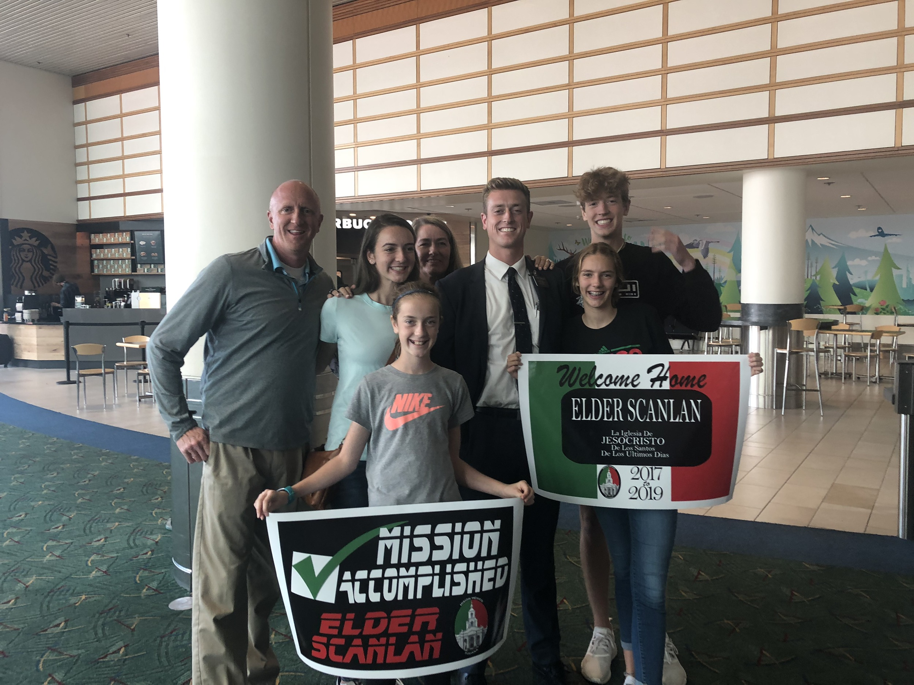

Origin
I am the oldest of five kids in our family of seven. I am a business student and a die hard Portland Trailblazer Fan. I was born on the Oregon Coast but then moved into the valley when I was about five years old. My parents crafted a deep love for sports within each one of us kids, due to the fact that they were each athletes then later coaches in their own careers. I attended North Marion High School where I played three sports but grew to love basketball the most. Upon graduation I served an LDS mission in Mexico Tijuana where I learned to love another culture more than my own. When I returned I pursued my passion for basketball by enrolling in Mt. Hood Community College, located 15 minutes outside of Portland, where I attended as a student athlete.
Greatest Blazer Game Ever
Resume
- Skills
- Education
- Work Experience
- Fluent in Spanish
- Sales
- Motivation
- Organization
- Relationship Building
- North Marion High School Valedictorian
- Honor Roll Graduate
- Student Scholar Athlete
- Mt. Hood Community College
- 3.7 GPA
- President Roll Awardee
- Deans List Awardee
- Hawx Services Inside Sales Representative
- Hawx Services Route Sales Manager
- Barrier Pest Control Route Sales Manager